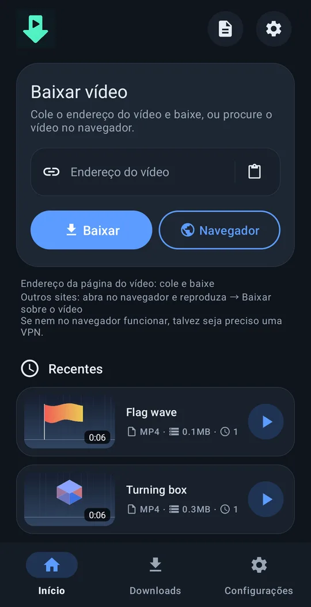
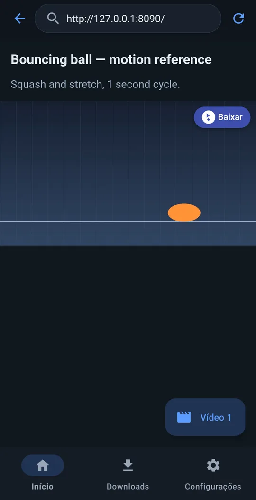
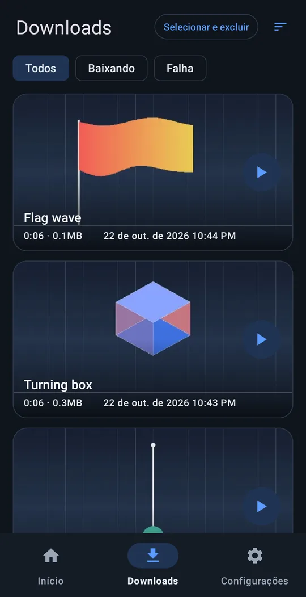
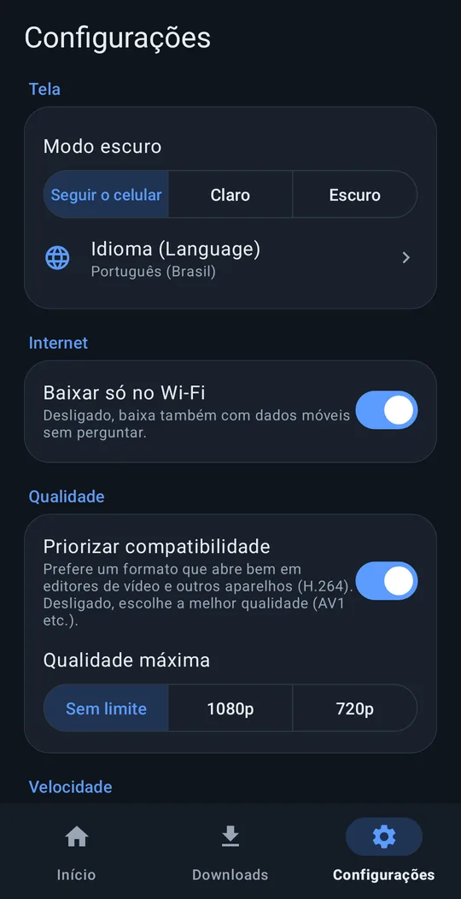

Baixe qualquer vídeo!!
Cole o link do vídeo e baixe com facilidade.
Android 8.0+ · grátis · sem cadastro
Como funciona




Recursos
Cole um link
Funciona com a maioria dos sites de vídeo populares.
Botão “Baixar” nos vídeos
No navegador integrado, aparece um botão “Baixar” sobre o vídeo que a página reproduz — funciona em muitos sites em que o link não resolve.
Pronto para editar
Salvo em Movies/VideoRef. Com “Priorizar compatibilidade” ligado, ele escolhe um formato que os apps de edição abrem na hora.
Continua em segundo plano
Continua baixando com a tela desligada. Você também pode escolher “Baixar só no Wi-Fi” e a qualidade máxima.
10 idiomas
English, 한국어, 简体中文, 繁體中文, 日本語, Español, Deutsch, Français, Português (Brasil), Русский. Tema claro / escuro.
Nada é enviado para nós
Não precisa de cadastro, e nada é enviado ao desenvolvedor.
Instalação
- Baixe o instalador (APK) pelo botão acima.
- Abra o arquivo baixado no celular.
- Se pedir, permita que o navegador ou o app de arquivos instale apps desconhecidos e toque em Instalar.
Apoie o just downloader
O just downloader é grátis. Se ele te poupou tempo, um pequeno apoio ajuda na próxima atualização.
Perguntas frequentes
É grátis mesmo?
Sim, totalmente grátis. Sem cadastro e sem período de teste.
Ele envia meus dados?
Nenhum dado pessoal. Nada vai para o desenvolvedor, a menos que você mesmo envie um relatório de erro. Política de privacidade
Em quais sites funciona?
Na maioria dos sites de vídeo populares, basta o link. Se não der, abra a página no navegador integrado, reproduza o vídeo e toque em “Baixar” sobre ele. Vídeos com proteção contra cópia de serviços pagos não podem ser salvos.
Deu algum problema?
Configurações → Ajuda → Relatar problema monta um e‑mail para support@4dir.net com o registro do app anexado.